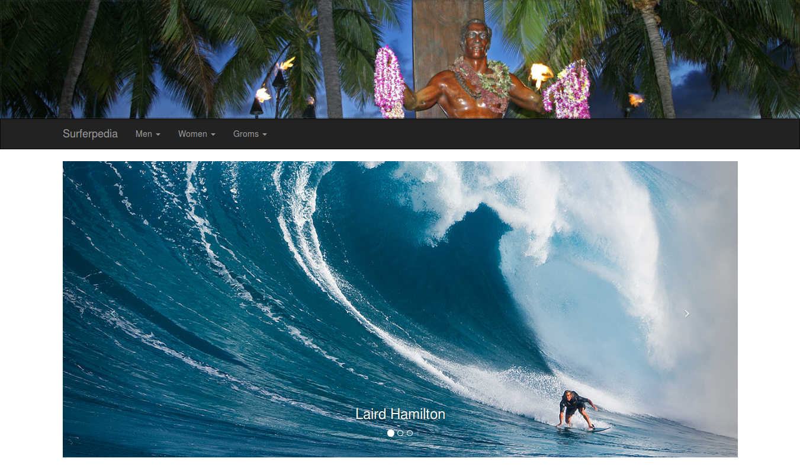

Overview
This is a Play application that provides an encyclopedia of surfers.
Installation
git clone https://github.com/taylorak/ResponsiveKamanu.git
cd surferpedia
play
run
View the running application at http://localhost:9000
Usage
Use the navbar to find information about various surfers.
Credits
ICS 314, Fall 2013